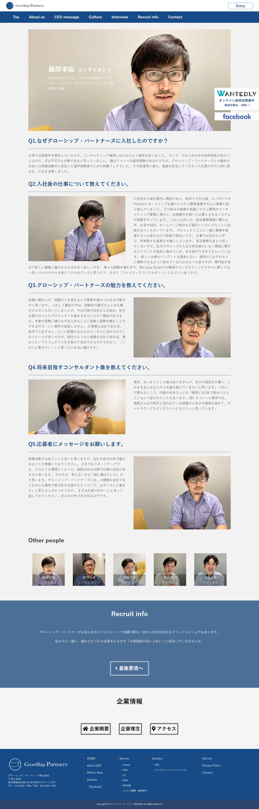
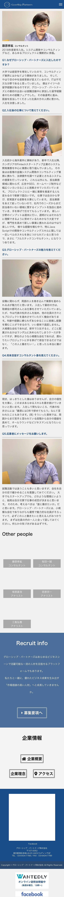

website
グローシップ・パートナーズ株式会社社員インタビューページ
担当箇所：ページリデザイン、コーディング、写真撮影
グローシップ・パートナーズ株式会社のインタビューページのデザイン、コーディング、写真撮影を担当しました。インタビューページは文字数が多く縦長のページになってしまうので画像と文字のレイアウトを質問ごとに入れ替えることで単調なデザインになりすぎないようにしました。


website
担当箇所：ページリデザイン、コーディング、写真撮影
グローシップ・パートナーズ株式会社のインタビューページのデザイン、コーディング、写真撮影を担当しました。インタビューページは文字数が多く縦長のページになってしまうので画像と文字のレイアウトを質問ごとに入れ替えることで単調なデザインになりすぎないようにしました。